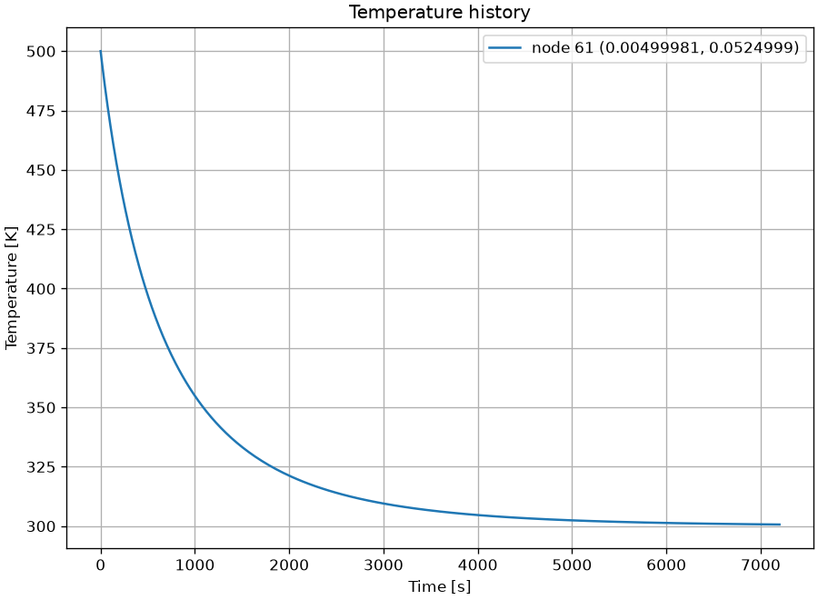
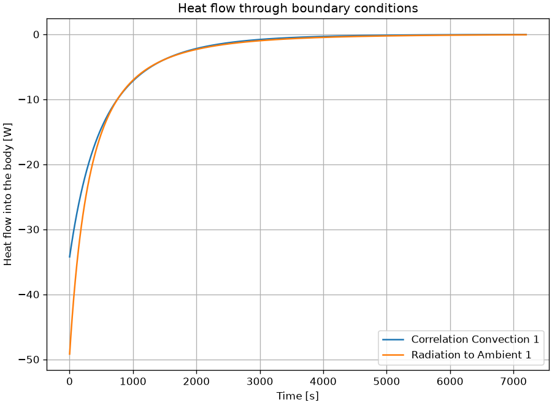
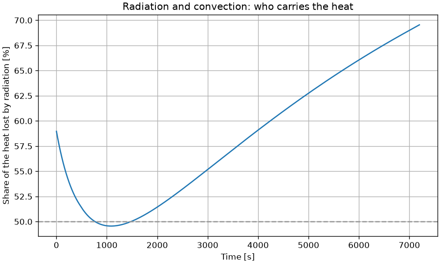

Tutorial 2: a hot fin cooling in still air¶
What you will build. A thin aluminium plate, a fin cut from heat-sink stock, that starts at 500 K and cools in still air. It loses heat by natural convection and by radiation, and you follow it for an hour and then for a second hour.
What you will learn. How to set up a transient analysis (initial temperature, end time, time stepping); how to get a heat-transfer coefficient from a correlation instead of typing one, and how to preview that coefficient; how to add radiation to the surroundings; how to read a temperature history and the split of the heat loss between convection and radiation; how to read the energy balance of every step; how to continue a finished run to a later end time; and how to check the result by hand.
The finished model is in models/fin-quench.tfea; open it with File > Open... to compare with your own. If you have not used the program before, do Tutorial 1 first: it explains the selection procedure used below in detail.
The problem¶
The fin is a plate 10 mm thick, 100 mm high and 100 mm deep, standing upright. It is made of 6061-T6 aluminium and starts at a uniform 500 K. The air around it is still, at 300 K. Both large faces lose heat by natural convection and by radiation. The two ends are insulated. The ends are a simplification: they are small, and insulating them keeps the model a plain plate in a plain environment.
The model is a drawing of the plate seen edge-on: a rectangle 0.01 m wide (x, the thickness) and 0.1 m tall (y). The depth of 0.1 m is entered as the region "Thickness". The two long vertical edges are the faces.
| Item | Value |
|---|---|
| Geometry | rectangle 0.01 m (x) by 0.1 m (y); depth 0.1 m ("Thickness" of the region) |
| Material | Aluminium 6061-T6, from the library: k = 167 W/(m K), density 2700 kg/m³, specific heat 896 J/(kg K) |
| Initial temperature | 500 K, uniform |
| Convection on the two faces | correlation vplate_natural (vertical plate, Churchill and Chu), fluid Air at 300 K, characteristic length 0.1 m |
| Radiation on the two faces | emissivity 0.8, surroundings at 300 K |
| Ends (top and bottom) | adiabatic |
| Mesh | global element size 0.005 m (66 nodes, 86 elements) |
| Analysis | transient, end time 3600 s, initial time step 1 s, automatic time stepping |
| Later | continue the run to 7200 s |
The air properties (density, viscosity, conductivity, specific heat) come from the library table for air, at the film temperature, which is the mean of the surface and the air temperature. At the start that is (500 + 300)/2 = 400 K. The table covers 250 K to 1000 K, so every temperature of this run is inside it and the program will not warn.
Temperature units. Everything is in kelvin, the default. The convection coefficient depends on the temperature difference and on the film temperature, so it changes as the plate cools. The program recomputes it in every nonlinear iteration of every step.
Steps¶
1. Draw the geometry¶
- Choose Geometry > Rectangle.... Type x =
0, y =0, Width =0.01, Height =0.1and press OK. The status bar shows "Building geometry..." and then "Geometry rebuilt". - Choose View > Fit view (or press F).
The plate is ten times taller than wide, so it is a thin band on screen. Zoom with the mouse wheel if you cannot hit the edges later. A middle-button drag pans.
2. Take the material from the library¶
- Choose Tools > Material library.... A window titled "Material library" opens, with a Built-in tab and a User tab.
- On the Built-in tab select Aluminium 6061-T6. Its properties are shown below the list.
- Press Copy into model. A node "Aluminium 6061-T6" appears under Materials in the tree. Close the window.
3. Assign it to the plate¶
- Right-click Regions and choose Add region. The panel "Region" opens.
- Open the box of the "Selection" field and choose all. ("all" is made by the program: it is every surface of the model, here the one plate.)
- "Material" already reads "Aluminium 6061-T6", because it is the only material.
- In "Thickness" type
0.1and press Enter.
4. Enter the loads¶
Natural convection.
- Right-click Loads & Boundary Conditions and choose Add > Add Correlation Convection. The node "Correlation Convection 1" appears and its panel opens.
- In "Selection" press Pick in viewport, choose Curve in the toolbar, click the left long edge, Ctrl-click the right long edge ("2 curve(s) picked"), press Apply and switch picking off.
- Open the "Correlation" box and choose vplate_natural. A frame below the form now shows what you chose: the title "Vertical plate (Churchill–Chu)", its formula, its validity ("all Ra") and its characteristic length (the height).
- Open the "Fluid" box and choose Air.
- In "Fluid temperature" type
300and press Enter. - In "Characteristic length" type
0.1and press Enter. For a vertical plate this is its height. If you leave the field empty the program takes a length from the geometry. - Leave "Velocity" empty, "Wall temperature" at local (the film temperature is computed at each point of the edge from the temperature there), "Multiplier" at 1 and "Extra inputs" empty.
Preview the coefficient. Below the form is a frame "Preview of h". It asks for the inputs that the condition does not already hold. Here that is only the "Surface temperature".
- In "Surface temperature" type
500and press Enter. The frame shows:
h = 8.57576 W/(m^2 K)
Nu = 25.3721
Ra = 4.851e+06
Pr = 0.6903
Regime: single correlation
T_film = 400 K
Length used = 0.1 m
The preview is not stored in the model. It is the coefficient the first iteration of the first step starts from, 8.58 W/(m² K) for a plate 200 K above the air.
The same calculation is available on its own: Tools > HTC calculator... opens a window
where you choose the correlation and the fluid and type the surface temperature (500), the
fluid temperature (300) and the characteristic length (0.1). It shows the same numbers,
and it updates as you type. Use it to see how h changes: for the same plate try a surface
temperature of 400 or 320.
Radiation.
- Right-click Loads & Boundary Conditions and choose Add > Add Radiation to Ambient.
- The two faces already have a selection, made for the convection. Do not pick them again. Open the box of the "Selection" field and choose Correlation Convection 1 selection.
- In "Emissivity" type
0.8and press Enter. - In "Ambient temperature" type
300and press Enter.
Insulated ends.
- Right-click Loads & Boundary Conditions and choose Add > Add Adiabatic.
- In "Selection" pick the bottom edge, Ctrl-click the top edge ("2 curve(s) picked"), press Apply and switch picking off.
Three nodes now stand under Loads & Boundary Conditions: Correlation Convection 1, Radiation to Ambient 1 and Adiabatic 1. Their heat flows are reported under these names.
5. Mesh¶
- Click the node Mesh. In "Global element size" type
0.005and press Enter. - Press Generate mesh. The status bar says "Mesh generated: 66 nodes, 86 elements".
6. Initial condition¶
- Click the node Initial Condition. "Kind" is uniform, which is what you want.
- In "Temperature" type
500and press Enter. The default is 293.15 K, so this step is not optional: without it the plate would start almost at room temperature.
7. Transient settings¶
- Click the node Analysis Settings. In "Analysis type" choose transient. More fields appear: end time, the time-step controls, integration and output.
- In "End time" type
3600and press Enter (seconds). - In "Initial time step" type
1and press Enter. See the note below. - Leave the rest: "Adaptive time step" on, "Time-step tolerance" 0.02, "Theta" 1 (backward Euler, stable for any step), "Lumped capacitance" off, "Output steps" all (every step is stored).
Why set the first time step? If the field is empty the program suggests a first step from the mesh and the material (0.0389 s for this plate). It then warns in the Messages dock:
the time step of 0.0389 s is below h^2 rho c / (6 k) in 86 % of the elements; with
consistent capacitance the temperatures may oscillate near sudden changes. Use lumped
capacitance or a finer mesh.
The warning is about a start in which the temperature jumps from one element to the next. Here the start is uniform, so nothing jumps. The program cannot know that, and typing a first step of 1 s keeps the message log clean. The time stepping adapts from there on its own: it halves a step whose error estimate is too large and enlarges a step whose error is small.
8. Solve¶
- Choose Solve > Validate. The status bar says "Validation: no issues".
- Choose Solve > Solve. The "Solving" window shows the time, the time step, the step number, the iterations of the last step and whether it converged. The steps get longer as the plate cools. When the run ends the window says "Finished", and the status bar reads "Solve finished at t = 3600 s: 218 stored step(s)" followed by the results file.
- The Messages dock holds one line for every step and every nonlinear iteration. Its last lines give the energy balance and a summary:
transient run finished at t = 3600 s: 217 step(s), 0 rejected, 0 Newton failure(s)
There were 217 steps. The 218 "stored steps" count the initial state as well. 4. A node "Temperature 1" appears under Solution, and the viewport shows the last step. The plate is almost uniform: the colour scale spans less than a thousandth of a kelvin. The "Step" and "Time" boxes of its panel move between stored steps.
9. Look at the results¶
Temperature history.
- Choose Results > Nodal history.... The viewport switches to node picking by itself and the status bar says to pick the nodes.
- Click a node near the middle of the plate. Choose Results > Nodal history... again. A chart window shows the temperature of the node against time.
Heat-flow history. Choose Results > Heat-flow history. A chart window shows the heat flow through each condition against time. A negative value is heat leaving the plate. Two lines appear, Correlation Convection 1 and Radiation to Ambient 1. The adiabatic condition carries no heat and has no line.
Energy balance. Choose Results > Energy balance. It plots, against time, the rows of
the energy balance of each step. The series are named heat_in, heat_out, net,
stored_rate and imbalance. Here heat_in is zero, heat_out is the heat leaving, net
is its negative, and stored_rate (the rate at which the stored energy changes) lies exactly
on net. The imbalance is too small to see.
10. Continue the run to 7200 s¶
The plate is not yet at the air temperature after an hour. You can go on without starting again.
- In Analysis Settings change "End time" to
7200and press Enter. The properties Click the node "Temperature 1": its panel now says "These results are out of date: the model changed since the solve." That is correct: the results end at 3600 s and the model now asks for 7200 s. - Choose Solve > Continue transient run. (The ordinary Solve > Solve would start again from 500 K.) The program reads the last stored step and goes on from t = 3600 s. The message log says "continuing ... from t = 3600 s to t = 7200 s".
- When it ends, the status bar says "Solve finished at t = 7200 s: 248 stored step(s)". Thirty steps were added to the same results file, and the out-of-date note is gone.
Change nothing else between the two solves. The mesh must be the one the first run used, and a change to a material or a load would make the second part a different problem from the first.
Results¶
The temperature of a node at the middle of the plate, over both parts of the run (this is the chart of step 9 after step 10):

The heat flows through the two conditions:

| Quantity | Value |
|---|---|
| Stored steps to 3600 s / to 7200 s | 218 / 248 |
| Temperature of the plate centre at 3600 s | 306.14 K |
| Temperature of the plate centre at 7200 s | 300.67 K |
| Largest temperature difference across the plate, after the first step | 0.066 K |
| Largest temperature difference across the plate, at 3600 s | below 0.001 K |
How the heat loss is shared. These are the heat flows leaving the plate through the two conditions (for 0.1 m of depth), from the heat-flow history.
| Time | Convection [W] | Radiation [W] | Radiation share |
|---|---|---|---|
| 1 s (first step) | 34.2 | 49.2 | 59.0 % |
| 3600 s | 0.457 | 0.620 | 57.5 % |
| 7200 s | 0.0288 | 0.0659 | 69.5 % |
At the start radiation carries the larger part, because the plate is hot and radiation depends on the fourth power of the absolute temperature. While the plate is hot, radiation falls fastest and its share falls, to a minimum of 49.6 % at about 1080 s, where the two are nearly equal. After that the share rises again: close to the air temperature the convection coefficient from the correlation falls proportionally more than the radiation coefficient does, and radiation carries most of the heat. The picture shows the whole curve:

Checking the answer¶
By hand: the lumped time constant¶
The plate is thin and made of a good conductor, so it should cool as one lump. Check that, and then check the time scale of the cooling. The formulas are the lumped-capacitance ones that the program's own verification (V-16 and V-17) uses.
- Biot number. Bi = h L / k, with L half the thickness (the heat has to travel from the middle to a face). Take h as convection plus radiation (steps 2 and 3).
- Convection coefficient. From the preview or the HTC calculator at 500 K: 8.58 W/(m² K).
- Radiation coefficient. The radiation heat flux is ε σ (T⁴ − T∞⁴). Dividing it by the temperature difference (T − T∞) gives an equivalent coefficient. With ε = 0.8, σ = 5.670374e-8 W/(m² K⁴), T = 500 K and T∞ = 300 K: 12.34 W/(m² K).
- Total. h = 8.58 + 12.34 = 20.91 W/(m² K).
- Biot number. Bi = 20.91 × 0.005 / 167 = 6.3e-4. This is far below 0.1, so the plate is close to one temperature at every instant. The program agrees: the largest temperature difference across the plate is 0.066 K after the first second and below 0.001 K at 3600 s.
- Time constant. τ = ρ c V / (h A), with V = 0.01 × 0.1 × 0.1 = 1e-4 m³ and A = 2 × 0.1 × 0.1 = 0.02 m² (two faces; the ends are insulated). ρ c V = 2700 × 896 × 1e-4 = 241.9 J/K and h A = 20.91 × 0.02 = 0.418 W/K, so τ = 578 s.
- Initial heat loss. h A (T − T∞) = 0.418 × 200 = 83.7 W. The program's first step (at t = 1 s) loses 34.2 + 49.2 = 83.4 W. They agree to 0.3 %; the plate has already cooled by about 0.35 K during that first second.
The time constant does not describe the whole curve. With a constant h the plate would cool as T∞ + (T₀ − T∞) e^(−t/τ), which gives 373.6 K at t = τ = 578 s. The finite-element model gives 388.3 K there, about 15 K warmer. The reason is that h is not constant: it falls as the plate cools, in the correlation (smaller temperature difference, cooler air film) and in radiation (lower temperature), so the real cooling is slower than any single exponential fitted to the first instant. This is the reason to use a correlation and not a fixed coefficient for a quench.
Energy balance of every step¶
Each step checks that heat generated plus heat entering through the boundaries equals the rate at which the stored energy changes. For a transient case the relative imbalance must be below 1e-3. The largest value over all 247 steps, in both parts of the run, is 1.5e-6. The last step of the first part gave 1.460e-6, and you can read it in the message log, in the line "relative imbalance". Results > Energy balance shows the whole history.
Things to try¶
- Change "Emissivity" to
0.1(a bare, polished surface). Solve again from the start with Solve > Solve and compare the shares and the time constant with the table above. - Switch on "Lumped capacitance" in Analysis Settings and compare the temperature at 3600 s. Then leave "Initial time step" empty and see how the warning of step 7 changes.
- Change "Time-step tolerance" to
0.005and watch the number of steps and the answer. - Set "Output steps" to times and "Output times" to
600, 1800, 3600. The results then hold four stored steps, and the history chart has four points. - Open Tools > Units... and show temperatures in degrees Celsius. Every panel and chart converts; nothing in the model changes.
The same model as a script¶
The same model, the hand calculation and the continuation are in
examples/tutorial_fin_quench.py.